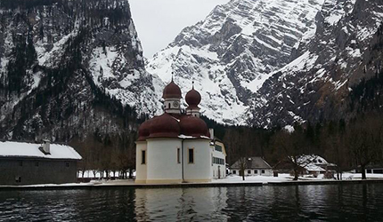
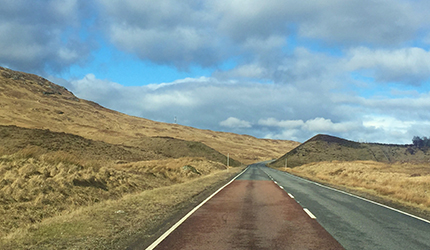
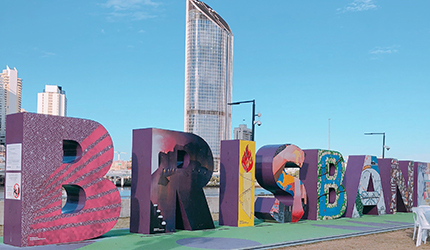
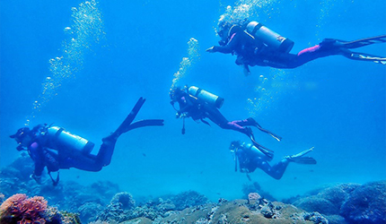
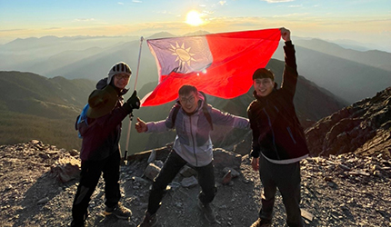

知￭性￭天￭地
▋旅遊記事

征服者的沉浮 – 阿爾卑斯的國王湖
那時候我在德國實習。 因為德國麻疹突發於學生中，於是我們幾個外來人口，被要求到醫院接種德國麻疹疫苗，並且被醫院要求「居家休息」。 10天的自我觀察期，對我們幾個剛到歐洲的女孩子們誘惑力實在太大，幾個人連第一個月薪資都還沒拿到，就拿著身上帶著的，為數不多的歐元，開始蠢蠢欲動。 我們決定去慕尼黑，因為我們想去看迪士尼Logo上那座城堡！據說城堡是以慕尼黑的新天鵝堡為雛形所設計出來的。 快速的討論了行程，訂火車，買區間車票，做景點功課，查詢票價，預定青年旅館。拎上行李 ...
▋旅遊記事

神秘蕭條感的蘇格蘭高地遊
在研究所時期利用春假和空堂時間，和好友規劃了一趟以蘇格蘭高地為主的蘇格蘭小旅行。因為時間有限，加上蘇格蘭高地地廣人稀交通不便，我們報了當地四天三夜的高地旅遊團，也是網路上最多人推薦的旅遊方式，旅行社組成是以在愛丁堡或Glasgow念書或已畢業的年輕人為主，一路上不僅會介紹高地的歷史，也會根據團員的需求和天氣彈性的微調行程。 第一天從Glasgow出發遠離市區後，窗外的景色漸漸轉為蕭條卻不失單調，空曠的郊外和雄偉的自然景色，讓人心情不禁放鬆遼闊的起來 ...
▋旅遊記事

憶起旅行—澳洲，昆士蘭州
疫情肆虐，大家的自由受到了限制，只能透過照片回憶美景。讓我回想起曾經旅居的澳洲。踏上澳洲本土後，處處都能讓我大開眼界。因為本身就崇尚西方文化，完全沒有水土不服等問題，反而讓我學會了如何「放慢步調」。 布里斯本，南岸公園(Brisbane, South Bank) 在亞洲的高壓環境下，大家早已習慣快速的生活步調。但在西方文化的生活中，即使你想加快步調也不太容易。因為周遭的每一個人都相當放鬆，享受當下的每一刻。不論你身處於城市的哪一個角落，總是可以看到有人躺在草皮上曬太陽、看書，甚至是 ...
▋達人部落

潛水體驗｜藍洞潛水，船潛看海龜~不會游泳的也可以潛水考照!! (屏東墾丁潛水/體驗潛水)
因為有過幾次的體驗潛水覺得海底世界超美！！只不過因為之前參加的體驗潛水，是教練拎著你游 (潛水深度不超過10米)，而我想看更美更深的海底世界、想游去哪就去哪看海底生物於是，就想要來考照一波！我挑了一間位在屏東恆春墾丁，評價很不錯的藍洞潛水Blue Hole Dive Center，最棒的特色就是「船潛」全台唯一船潛 PADI 初階潛水員考照班 Open Water Diver！ 不用背超重裝備氣瓶走礁岸、也不會還要游很遠才下潛，因為是 ...
▋達人部落
「跳躍吧！時代的⼈們！」
在這個瘟疫蔓延的時代，⼈們的⽣活作息產⽣了180度的⼤轉變。疫情肆虐，各種娛樂與社交活 動產⽣的熱度瞬間轉變為適合病毒繁衍的溫室。為了阻斷及減緩病毒⽣長擴散，不得不降低活動的 熱度，卻也無情地區隔出⼈與⼈的距離。拜科技產品所賜，遠端電腦⼯作仍可維持世界經濟活動運 轉，也能透過視訊影⾳，再次建立起⼈與⼈之間的連結。儘管少了⾯對⾯的接觸，科技產品架起的 雲端橋樑，已⾜以讓我們在這糟糕的時代，取得些許⼼靈上的慰藉。 維持⼼理上的熱度固然重要，⽣理上的熱度可也不能冷卻 ...
▋達人部落

人生的第一座百岳-玉山主峰
2021/05/09~2021/05/10
2021年三月中，趁著新冠肺炎疫情尚未嚴重爆發，和同事、弟弟、表弟一起團報野訓玉山主峰登山團。因早耳聞登玉山難的不是路途，而是抽中排雲山莊，故大家只是互相提醒假日有空記得運動鍛鍊一下，殊不知兩個禮拜後旅行社通知中籤，一個月後登主峰！一陣錯愕下，大家才趕緊在假日鍛鍊並相約買齊登山裝備。 五月，登玉山的日子終於來臨！前一晚搭著接駁車到南投東埔住宿，隔天清晨五點起床，興奮的心情夾帶著些微緊張，先到玉山國家公園 ...
▋達人部落
探勘之旅- “萬大林道”出“丹大林道”
“萬大林道”是傳統百岳干卓萬群峰的登山口，位處於南投縣仁愛鄉，此林道由親愛國小進入，原本林道長度40公里，因路況不佳，目前可行駛高底盤及四輪傳動可駛到約8K大坍方處下車 (有塊紅色禁止通行警告牌及迴車空間)，為此行程起點，而最終要出“丹大林道”於2020年12月才重新開放，此林道位於南投縣信義鄉，於民國46年伐木業者孫海標得林務局巒大山林場管理處所屬[丹大林場]， 為了深入林區伐木運材，他集資並招募數千個民工及退除役官兵，修築此林道，深入中央山脈， 成為全台灣最長的 ...